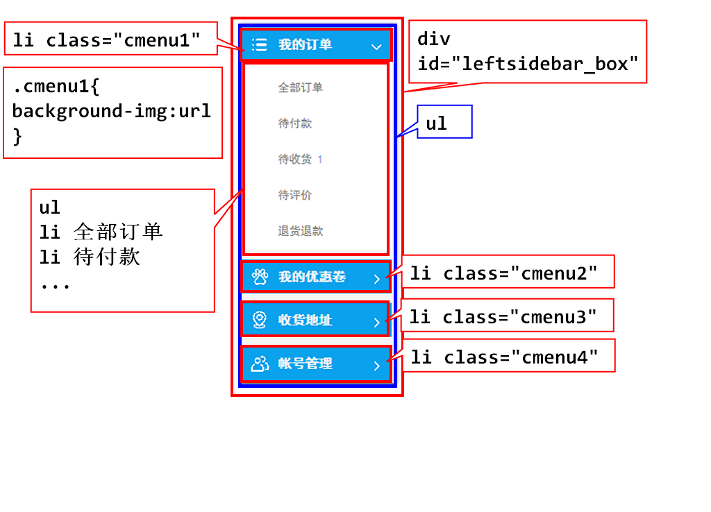

font-size:字体大小
单位:px cm
em:是一个相对度量单位 基础字号16px 12px
font-size:1em; 用于屏幕自适应
font-family:字体 "微软雅黑" "黑体"
font-weight:字体的粗细(磅值pt) 100pt
lighter 细一点
normal 正常粗细
bold 粗一点
bolder 比粗更粗
font-style:字体样式 normal italic斜体
<div id="d1">测试font的div标签</div>
<style type="text/css">
#d1{
width: 50%;
height: 200px;
border: 3px solid #aaa;
font-size: 40px;
font-family: "黑体";
font-weight: bolder;
font-style: italic;
}
</style>
color:文本颜色
text-align:文本的对齐方式
left | right | center
text-decoration:文本装饰
text-decoration:none;给a标签去除下划线
text-decoration: underline;
text-decoration: line-through;
text-decoration: overline;
line-height:文本行高
由于div的文本在默认情况下根据行高垂直居中
所以,如果希望文本在div垂直居中显示
只需要把行高属性,设置为div的高度
但是,此处存在bug.如果字数过多需要折行,那么行高的效果会每一行都遵循
border:1px solid black;
border-width:边框的宽度
border-color:边框颜色
border-style:边框的样式 solid
border-top:2px solid black;上边框
border-top-width:上边框的宽度
border-top-color:
border-top-style:
border-left:左边框
border-right:右边框
border-bottom:下边框
border:none;去除边框
border-top: 20px solid red;/* 实线 */
border-left: 3px dotted blue;/* 点 */
border-right: 30px double green;/* 双实线 */
border-bottom: 10px dashed gray;/* 虚线 */
设置边框的圆角
border-radius:3px;圆角,半径
div是正方的,网页中显示圆形,只需要圆角半径设置成div宽或者高的一半就可以了

<div id="leftsidebar_box">
<ul>
<li class="menu cmenu1">我的订单
<img src="../images/myOrder/myOrder1.png">
</li>
<!-- 与li同级的ul是二级菜单 -->
<ul class="submenu">
<li>全部订单</li>
<li>待付款</li>
<li>待收货</li>
<li>待评价</li>
<li>退货退款</li>
</ul>
<li class="menu cmenu2">我的优惠劵
<img src="../images/myOrder/myOrder1.png">
</li>
<!-- 与li同级的ul是二级菜单 -->
<ul class="submenu">
<li>我的优惠劵</li>
</ul>
<li class="menu cmenu3">收货地址
<img src="../images/myOrder/myOrder1.png">
</li>
<ul class="submenu">
<li>地址管理</li>
</ul>
<li class="menu cmenu4">账号管理
<img src="../images/myOrder/myOrder1.png">
</li>
<ul class="submenu">
<li>我的信息</li>
<li>安全管理</li>
</ul>
</ul>
</div>
<style type="text/css">
*{
margin: 0px;
padding: 0px;
}
li{
list-style: none;/* 清除li的点 */
}
#leftsidebar_box{
width: 160px;
}
.menu{
background-color: rgb(10,161,237);
height: 36px;
width: 120px;
color: #f5f5f5;
font-size: 14px;
font-weight: bold;
font-family: "黑体";
line-height: 36px;
background-repeat: no-repeat;
padding-left: 40px;
background-position: 10px center;/* 垂直居中 */
cursor: pointer;/* 鼠标悬停的时候变成小手 */
margin-bottom: 10px;
}
.cmenu1{
background-image: url(../images/myOrder/myOrder.png);
}
.cmenu2{
background-image: url(../images/myOrder/pcenter_icon1.png);
}
.cmenu3{
background-image: url(../images/myOrder/pcenter_icon2.png);
}
.cmenu4{
background-image: url(../images/myOrder/pcenter_icon3.png);
}
.submenu{
background-color: #fff;
padding-left: 40px;
padding-bottom: 15px;
}
.submenu>li{
color: #808080;
line-height: 40px;
font-size: 12px;
}
.menu>img{
float: right;
margin-top: 12px;
margin-right: 5px;
}
</style>
visible 溢出部分可见
hidden 溢出部分隐藏
scroll 溢出部分显示滚动条
<div id="d1">
<div id="d2"></div>
</div>
<style type="text/css">
/*
visible 溢出部分可见
hidden 溢出部分隐藏
scroll 溢出部分显示滚动条
*/
#d1{
width: 550px;
height: 300px;
background-color: #990066;
overflow: hidden;
}
#d2{
width: 500px;
height: 500px;
background-color: #006699;
margin-top: 20px;
}
</style>
display 控制元素的显示方式
display:block; 按照块级元素进行显示
display:inline;按照行内元素进行显示,一般不用
display:none; 隐藏元素
<span>我是span,我是一个行内元素</span>
span{
display:block;
width:200px;
height:200px;
border:2px solid red;
font-size: 20px;
color: #f00;
margin-top: 100px;
}
<body>
<a href="#" id="login_btn">登录</a>
</body>
<style type="text/css">
#login_btn{
display: block;
width: 250px;
height: 40px;
background: -webkit-linear-gradient(top, #006699 0%, #990066 100%);
text-decoration: none;
color: #fff;
text-align: center;
line-height: 40px;
font-size: 14px;
border-radius:4px;
font-family: "黑体";
}
</style>
float:left;元素浮动起来往左放
float:right;元素浮动起来往右放
<body>
<div id="d1"></div>
<div id="d2"></div>
<div id="d3"></div>
<div id="d4">fafdasfsdafsdafdsafsdfasdfsdafsadfsdfsdsfsdfdfdasfsd</div>
</body>
<style type="text/css">
#d1{
width: 300px;
height: 200px;
background: #006699;
float: left;
}
#d2{
width: 200px;
height: 300px;
background: #990066;
float: left;
}
#d3{
width: 250px;
height: 250px;
background: #660099;
float: left;
}
#d4{
height: 50px;
background: black;
color: #fff;
/* 当前元素将不会被浮动的元素所覆盖 */
clear: both;/* 清除浮动 */
}
</style>